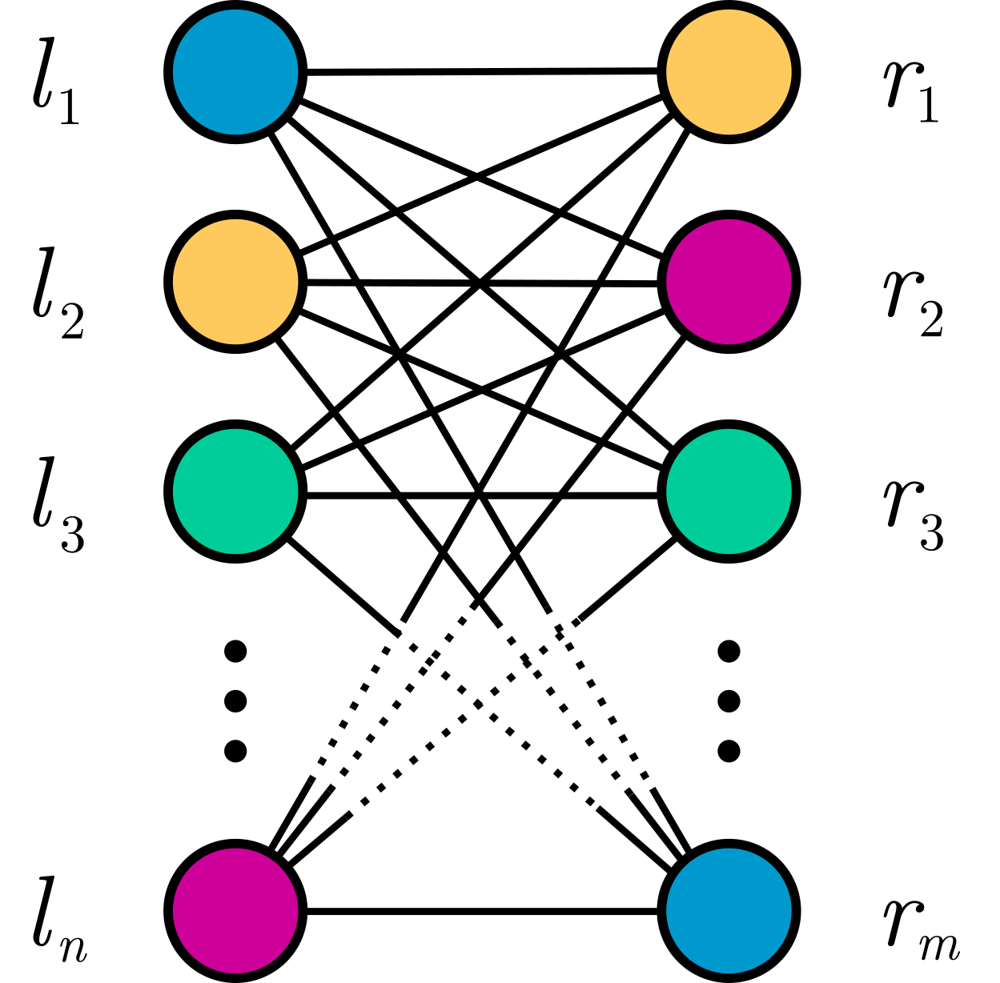

Module evaltools.geometry
Provides ease-of-use functionality for geographic and geometric operations.
Expand source code
"""
Provides ease-of-use functionality for geographic and geometric operations.
"""
from .dissolve import dissolve
from .dualgraph import dualgraph
from .unitmap import unitmap, invert
from .dataframe import dataframe
from gerrychain import Graph, Partition
from .optimize import (
minimize_dispersion, minimize_dispersion_with_parity, minimize_parity,
calculate_dispersion, populationoverlap, arealoverlap, optimalrelabeling
)
from .updater import dispersion_updater_closure
__all__ = [
"minimize_dispersion",
"minimize_dispersion_with_parity",
"minimize_parity",
"calculate_dispersion",
"dispersion_updater_closure",
"dissolve",
"dualgraph",
"unitmap",
"invert",
"dataframe",
"populationoverlap",
"optimalrelabeling",
"arealoverlap"
]Sub-modules
evaltools.geometry.optimizeevaltools.geometry.updater
Functions
def arealoverlap(left: geopandas.geodataframe.GeoDataFrame, right: geopandas.geodataframe.GeoDataFrame, assignment: str = 'DISTRICT', crs=None) ‑> pandas.core.frame.DataFrame-
Given two GeoDataFrames, each encoding districting plans, computes the areal overlap between each pair of districts.
leftis the districting plan to be relabeled (e.g. a proposed districting plan) andrightis the districting plan with district labels we're trying to match (e.g. an enacted districting plan). Ifleft(denoted L) has n districts andright(denoted R) has m districts, an n \times m matrix C is computed, where the entry M_{ij} represents the area of the intersection of the districts L_i and R_j. C is represented as a pandas DataFrame, where the row indices are the labels inleft, and are the preimage of the label mapping; column indices are the labels inright, and are the image of the label mapping.Args
left:pd.DataFrame- GeoDataFrame whose labels are the preimage of the relabeling.
right:pd.DataFrame- GeoDataFrame whose labels are the image of the relabeling.
assignment:str- Column on
leftandrightwhich contains the district identifier.
Returns
Cost matrix C, represented as a DataFrame.
Expand source code
def arealoverlap( left: gpd.GeoDataFrame, right: gpd.GeoDataFrame, assignment: str="DISTRICT", crs=None ) -> pd.DataFrame: r""" Given two GeoDataFrames, each encoding districting plans, computes the areal overlap between each pair of districts. `left` is the districting plan to be relabeled (e.g. a proposed districting plan) and `right` is the districting plan with district labels we're trying to match (e.g. an enacted districting plan). If `left` (denoted \(L\)) has \(n\) districts and `right` (denoted \(R\)) has \(m\) districts, an \(n \times m\) matrix \(C\) is computed, where the entry \(M_{ij}\) represents the area of the intersection of the districts \(L_i\) and \(R_j\). \(C\) is represented as a pandas DataFrame, where the row indices are the labels in `left`, and are the preimage of the label mapping; column indices are the labels in `right`, and are the image of the label mapping. Args: left (pd.DataFrame): GeoDataFrame whose labels are the preimage of the relabeling. right (pd.DataFrame): GeoDataFrame whose labels are the image of the relabeling. assignment (str): Column on `left` and `right` which contains the district identifier. Returns: Cost matrix \(C\), represented as a DataFrame. """ # Force the two things to be the same CRS (or the provided CRS) if crs: left = left.to_crs(crs); right = right.to_crs(crs) else: right = right.to_crs(left.crs) # An empty list of records for everything. records = [] # Figure out the image as we go along. image = [] # Now, iterate over each dissolved district, finding the areal overlap with # enacted districts. for pid, pdistrict in zip(left[assignment], left["geometry"]): image.append(pid) records.append({ eid: pdistrict.intersection(edistrict).area for eid, edistrict in zip(right[assignment], right["geometry"]) }) # Create a dataframe from that! weighted = pd.DataFrame.from_records(records) weighted.index = image return weighted def calculate_dispersion(units: geopandas.geodataframe.GeoDataFrame, enacted_col: str, proposed_col: str, pop_col: str) ‑> int-
Calculates core dispersion in a state given an column with enacted districts and a column with proposed numberings. Used in WI.
Args
units- The units to optimize on. E.g. Census blocks.
enacted_col- The column in the GeoDataFrame with the enacted districts.
proposed_col- The column in the GeoDataFrame with the proposed districts.
Returns
An integer of the absolute number of people who changed districts.
Expand source code
def calculate_dispersion(units: gpd.GeoDataFrame, enacted_col: str, proposed_col: str, pop_col: str) -> int: """ Calculates core dispersion in a state given an column with enacted districts and a column with proposed numberings. Used in WI. Args: units: The units to optimize on. E.g. Census blocks. enacted_col: The column in the GeoDataFrame with the enacted districts. proposed_col: The column in the GeoDataFrame with the proposed districts. Returns: An integer of the absolute number of people who changed districts. """ if units[enacted_col].dtype != units[proposed_col].dtype: raise TypeError("Your enacted and proposed columns must have the same type!") return units[units[enacted_col] != units[proposed_col]][pop_col].sum() def dataframe(P: gerrychain.partition.partition.Partition, index: str = 'id', assignment: str = 'DISTRICT', columns: list = None) ‑> pandas.core.frame.DataFrame-
Converts a
Partitioninto aDataFrame.Args
P:Partition- GerryChain
Partitionobject to have its data framed. index:str, optional- Graph attribute to use as an index. The
networkxdefault name is"id". assignment:str, optional- Column name for assignment.
columns:list, optional- List of columns to add to the dataframe, not
including the index. If
None(or another falsy value), gets all columns.
Returns
DataFramewith attached graph data.Expand source code
def dataframe( P: Partition, index:str="id", assignment:str="DISTRICT", columns:list=None ) -> pd.DataFrame: """ Converts a `Partition` into a `DataFrame`. Args: P (Partition): GerryChain `Partition` object to have its data framed. index (str, optional): Graph attribute to use as an index. The `networkx` default name is `"id"`. assignment (str, optional): Column name for assignment. columns (list, optional): List of columns to add to the dataframe, not including the index. If `None` (or another falsy value), gets all columns. Returns: `DataFrame` with attached graph data. """ # Create dataframe. gdf = pd.DataFrame.from_records({index: v, **d} for v, d in P.graph.nodes(data=True)) # Assign vertices. assignedvertices = P.assignment.to_dict() gdf[assignment] = gdf[index].map(assignedvertices) # Drop columns if necessary. if columns: gdf = gdf[[assignment, index] + columns] return gdf def dispersion_updater_closure(units: geopandas.geodataframe.GeoDataFrame, enacted_col: str, pop_col: str, verbose: bool = False)-
An updater to calculate best possible dispersion for a
gerrychain.Partitionobject.Args
units- The units to optimize on. E.g. Census blocks.
enacted_col- The column in the GeoDataFrame with the enacted districts.
proposed_col- The column in the GeoDataFrame with the proposed districts.
extra_constraints- Optional; A function that can add extra constraints to the model, such as parity (in the case of WI).
verbose- If true, do not suppress solver output. Otherwise, stay quiet.
Returns
An updater that calculates the minimal core dispersion of a Partition object.
Expand source code
def dispersion_updater_closure(units: gpd.GeoDataFrame, enacted_col: str, pop_col: str, verbose: bool = False): """ An updater to calculate best possible dispersion for a `gerrychain.Partition` object. Args: units: The units to optimize on. E.g. Census blocks. enacted_col: The column in the GeoDataFrame with the enacted districts. proposed_col: The column in the GeoDataFrame with the proposed districts. extra_constraints: Optional; A function that can add extra constraints to the model, such as parity (in the case of WI). verbose: If true, do not suppress solver output. Otherwise, stay quiet. Returns: An updater that calculates the minimal core dispersion of a Partition object. """ def updater(partition: gerrychain.Partition): units["partition"] = partition.assignment.to_series() relabeling = minimize_dispersion(units, enacted_col, "partition", pop_col, verbose=verbose) units["partition"] = units["partition"].apply(lambda x: relabeling[x]) return calculate_dispersion(units, enacted_col, "partition", pop_col) return updater def dissolve(geometries, by='DISTRICTN', reset_index=True, keep=[], aggfunc='sum') ‑> geopandas.geodataframe.GeoDataFrame-
Dissolves
geometrieson the columnby. Intended to dissolve a set of source geometries (e.g. VTDs, blocks, block groups, etc.) to district geometries.Args
geometries:GeoDataFrame- Set of geometries to be dissolved.
by:str- Name of the column used to group objects.
reset_index:boolean, optional- If true, the index of the resulting
GeoDataFrame will be set to an integer index, not
by. Defaults toTrue. keep:list, optional- Additional columns to keep beyond the geometry
and
bycolumns. Defaults to an empty list, so no additional columns are kept. aggfunc:str, optional- Pandas groupby function type when aggregating;
defaults to
"sum".
Returns
A
GeoDataFramecontaining dissolved geometries and kept columns computed by the function designated byaggfunc.Expand source code
def dissolve( geometries, by="DISTRICTN", reset_index=True, keep=[], aggfunc="sum" ) -> GeoDataFrame: """ Dissolves `geometries` on the column `by`. Intended to dissolve a set of source geometries (e.g. VTDs, blocks, block groups, etc.) to district geometries. Args: geometries (GeoDataFrame): Set of geometries to be dissolved. by (str): Name of the column used to group objects. reset_index (boolean, optional): If true, the index of the resulting GeoDataFrame will be set to an integer index, not `by`. Defaults to `True`. keep (list, optional): Additional columns to keep beyond the geometry and `by` columns. Defaults to an empty list, so no additional columns are kept. aggfunc (str, optional): Pandas groupby function type when aggregating; defaults to `"sum"`. Returns: A `GeoDataFrame` containing dissolved geometries and kept columns computed by the function designated by `aggfunc`. """ # Pare down the geometries and dissolve. geometries = geometries[keep + [by, "geometry"]] geometries = geometries.dissolve(by=by, aggfunc=aggfunc) if reset_index: geometries = geometries.reset_index() return geometries def dualgraph(geometries, index=None, geometrycolumn='geometry', colmap={}, buffer=0, edges_to_add=[], edges_to_cut=[]) ‑> gerrychain.graph.graph.Graph-
Generates a graph dual to the provided geometric data.
Args
geometries:GeoDataFrame- Geometric data represented as a GeoDataFrame.
index:str, optional- Unique identifiers; indexing column of
geometries. If this value is not set, vertex labels are integer indices; otherwise, vertex labels are the values of this column. Defaults to"geometry". colmap:dict, optional- Maps old column names to new column names.
buffer:float, optional- Geometric buffer distance; defaults to
0. edges_to_add:list, optional- Edges to add to the graph object. Assumed to
be a list of pairs of objects, e.g.
[(u, v), …]whereuandvare vertex labels consistent withindex. edges_to_cut:list, optional- Edges to cut from the graph object. Assumed
to be a list of pairs of objects, e.g.
[(u, v), …]whereuandvare vertex labels consistent withindex.
Returns
A gerrychain
Graphobject dual to the geometric data.Expand source code
def dualgraph( geometries, index=None, geometrycolumn="geometry", colmap={}, buffer=0, edges_to_add=[], edges_to_cut=[] ) -> Graph: """ Generates a graph dual to the provided geometric data. Args: geometries (GeoDataFrame): Geometric data represented as a GeoDataFrame. index (str, optional): Unique identifiers; indexing column of `geometries`. If this value is not set, vertex labels are integer indices; otherwise, vertex labels are the values of this column. Defaults to `"geometry"`. colmap (dict, optional): Maps old column names to new column names. buffer (float, optional): Geometric buffer distance; defaults to `0`. edges_to_add (list, optional): Edges to add to the graph object. Assumed to be a list of pairs of objects, e.g. `[(u, v), ...]` where `u` and `v` are vertex labels consistent with `index`. edges_to_cut (list, optional): Edges to cut from the graph object. Assumed to be a list of pairs of objects, e.g. `[(u, v), ...]` where `u` and `v` are vertex labels consistent with `index`. Returns: A gerrychain `Graph` object dual to the geometric data. """ # Buffer geometries by default. geometries[geometrycolumn] = geometries[geometrycolumn].buffer(buffer) # Set indices and rename columns. if index: geometries = geometries.set_index(index) if colmap: geometries = geometries.rename(colmap, axis=1) # Generate the dual graph. dg = Graph.from_geodataframe(geometries, adjacency="rook") # Add and remove extraneous edges. for add in edges_to_add: dg.add_edge(*add) for cut in edges_to_cut: dg.remove_edge(*cut) # Return the graph! return dg def invert(unitmap: Dict[~A, ~B]) ‑> Dict[~B, List[~A]]-
Inverts the provided unit mapping.
Args
unitmap- Dictionary taking source unique identifiers to target unique identifiers.
Returns
A dictionary mapping target unique identifiers to lists of source unique identifiers.
Expand source code
def invert(unitmap: Dict[A, B]) -> Dict[B, List[A]]: """ Inverts the provided unit mapping. Args: unitmap: Dictionary taking source unique identifiers to target unique identifiers. Returns: A dictionary mapping target unique identifiers to _lists_ of source unique identifiers. """ # Invert the dictionary. inverse: Dict[B, List[A]] = {} for s, t in unitmap.items(): if inverse.get(t, None): inverse[t].append(s) else: inverse[t] = [s] return inverse def minimize_dispersion(units: geopandas.geodataframe.GeoDataFrame, enacted_col: str, proposed_col: str, pop_col: str, extra_constraints=None, verbose: bool = False) ‑> Dict[str, str]-
Minimize core dispersion in a state given an column with enacted districts and a column with proposed numberings. Returns a dictionary relabeling the proposed cols. Used in WI. Assumes that district labels are 1-indexed.
Args
units- The units to optimize on. E.g. Census blocks.
enacted_col- The column in the GeoDataFrame with the enacted districts.
proposed_col- The column in the GeoDataFrame with the proposed districts.
extra_constraints- Optional; A function that can add extra constraints to the model, such as parity (in the case of WI).
verbose- If true, do not suppress solver output. Otherwise, stay quiet.
Returns
A dictionary mapping proposed labels to optimized labels.
Expand source code
def minimize_dispersion(units: gpd.GeoDataFrame, enacted_col: str, proposed_col: str, pop_col: str, extra_constraints = None, verbose: bool = False) -> Dict[str, str]: """ Minimize core dispersion in a state given an column with enacted districts and a column with proposed numberings. Returns a dictionary relabeling the proposed cols. Used in WI. Assumes that district labels are 1-indexed. Args: units: The units to optimize on. E.g. Census blocks. enacted_col: The column in the GeoDataFrame with the enacted districts. proposed_col: The column in the GeoDataFrame with the proposed districts. extra_constraints: Optional; A function that can add extra constraints to the model, such as parity (in the case of WI). verbose: If true, do not suppress solver output. Otherwise, stay quiet. Returns: A dictionary mapping proposed labels to optimized labels. """ if not ensure_column_types(units, [enacted_col, proposed_col]): raise TypeError("Your enacted and proposed columns must be an int type!") if not ensure_column_types(units, [pop_col], lambda x: x.startswith("int") or x.startswith("float")): raise TypeError("Your pop col must be an int or float type!") districts = list(set(units[proposed_col].astype(int))) model = gp.Model("state_model") model.setParam('OutputFlag', int(verbose)) numbering = model.addVars(len(districts), len(districts), vtype=GRB.BINARY, name="numbering") exprs = [] if verbose: wrapper = lambda x: tqdm.tqdm(x) else: wrapper = lambda x: x for district in wrapper(districts): # iter over proposed enacted_intersection = units[units[proposed_col] == district].groupby(enacted_col).sum()[pop_col].to_dict() for enacted, overlap_pop in enacted_intersection.items(): # maximize overlap; minimize dispersion exprs.append(numbering[district-1, enacted-1]*overlap_pop) if extra_constraints is not None: extra_constraints(model, numbering, district, districts) model.addConstrs((numbering.sum("*", v)==1 for v in range(len(districts))), name="v") model.addConstrs((numbering.sum(v, "*")==1 for v in range(len(districts))), name="h") obj = gp.quicksum(exprs) model.setObjective(obj, GRB.MAXIMIZE) model.optimize() solution = model.getVars() numbering_mapping = {} for i in range(len(districts)): for j in range(len(districts)): if solution[i*len(districts)+j].x: numbering_mapping[districts[i]] = districts[j] return numbering_mapping def minimize_dispersion_with_parity(units: geopandas.geodataframe.GeoDataFrame, enacted_col: str, proposed_col: str, pop_col: str, extra_constraints=None) ‑> Dict[str, str]-
Minimize dispersion and odd->even parity shift in a state given an column with enacted districts and a column with proposed numberings. Returns a dictionary relabeling the proposed cols. Used in WI. Assumes that district labels are 1-indexed.
Args
units- The units to optimize on. E.g. Census blocks.
enacted_col- The column in the GeoDataFrame with the enacted districts.
proposed_col- The column in the GeoDataFrame with the proposed districts.
extra_constraints- Optional; A function that can add extra constraints to the model, such as parity (in the case of WI).
Returns
A dictionary mapping proposed labels to optimized labels.
Expand source code
def minimize_dispersion_with_parity(units: gpd.GeoDataFrame, enacted_col: str, proposed_col: str, pop_col: str, extra_constraints = None) -> Dict[str, str]: """ Minimize dispersion and odd->even parity shift in a state given an column with enacted districts and a column with proposed numberings. Returns a dictionary relabeling the proposed cols. Used in WI. Assumes that district labels are 1-indexed. Args: units: The units to optimize on. E.g. Census blocks. enacted_col: The column in the GeoDataFrame with the enacted districts. proposed_col: The column in the GeoDataFrame with the proposed districts. extra_constraints: Optional; A function that can add extra constraints to the model, such as parity (in the case of WI). Returns: A dictionary mapping proposed labels to optimized labels. """ optimal_parity_mapping = minimize_parity(units, enacted_col, proposed_col, pop_col) def parity_constraint(model, numbering, district, districts): if optimal_parity_mapping[district]: model.addConstr( gp.quicksum( numbering[district-1, x-1] for x in range(1, len(districts)+1) if x%2 == 0 ) == 1 ) extra_constraints(model, numbering, district, districts) return minimize_dispersion(units, enacted_col, proposed_col, pop_col, parity_constraint) def minimize_parity(units: geopandas.geodataframe.GeoDataFrame, enacted_col: str, proposed_col: str, pop_col: str, verbose: bool = False) ‑> Dict[str, bool]-
Minimize odd->even parity shift in a state given an column with enacted districts and a column with proposed numberings. Returns a dictionary with the parity of the proposed cols. Used in WI. Assumes that district labels are 1-indexed.
Args
units- The units to optimize on. E.g. Census blocks.
enacted_col- The column in the GeoDataFrame with the enacted districts.
proposed_col- The column in the GeoDataFrame with the proposed districts.
verbose- If true, do not suppress solver output. Otherwise, stay quiet.
Returns
A dictionary mapping proposed labels to booleans values representing the optimal parity. (True if even, False odd).
Expand source code
def minimize_parity(units: gpd.GeoDataFrame, enacted_col: str, proposed_col: str, pop_col: str, verbose: bool = False) -> Dict[str, bool]: """ Minimize odd->even parity shift in a state given an column with enacted districts and a column with proposed numberings. Returns a dictionary with the parity of the proposed cols. Used in WI. Assumes that district labels are 1-indexed. Args: units: The units to optimize on. E.g. Census blocks. enacted_col: The column in the GeoDataFrame with the enacted districts. proposed_col: The column in the GeoDataFrame with the proposed districts. verbose: If true, do not suppress solver output. Otherwise, stay quiet. Returns: A dictionary mapping proposed labels to booleans values representing the optimal parity. (True if even, False odd). """ if not ensure_column_types(units, [enacted_col, proposed_col]): raise TypeError("Your enacted and proposed columns must be an int type!") if not ensure_column_types(units, [pop_col], lambda x: x.startswith("int") or x.startswith("float")): raise TypeError("Your pop col must be an int or float type!") model = gp.Model("parity_model") model.setParam('OutputFlag', int(verbose)) districts = list(set(units[proposed_col].astype(int))) districts_even = model.addVars(len(districts), vtype=GRB.BINARY, name="districts_even") exprs = [] if verbose: wrapper = lambda x: tqdm.tqdm(x) else: wrapper = lambda x: x for i, block in wrapper(units[[enacted_col, proposed_col, pop_col]].iterrows()): district = districts.index(int(block[proposed_col])) isOdd = bool((int(block[enacted_col]) % 2) == 1) exprs.append(isOdd * districts_even[district] * block[pop_col]) obj = gp.quicksum(exprs) model.addConstr(gp.quicksum(districts_even) == math.floor(len(districts)/2), "c0") model.setObjective(obj, GRB.MINIMIZE) model.optimize() mapping = {} for i, v in enumerate(model.getVars()): mapping[districts[i]] = bool(v.x) return mapping def optimalrelabeling(left: Any, right: Any, maximize: bool = True, costmatrix: Callable = <function populationoverlap>) ‑> dict-
Finds the optimal relabeling for two districting plans.
Args
left:Any- Data structure which can be passed to
costmatrixto construct a cost matrix. District labels will be the preimage of the relabeling. If the defaultcostmatrixfunction is used, these must be pandas DataFrames, with at least three columns: one denoting a unique geometric identifier (e.g.GEOID20), one denoting the districting assignment, and another denoting the population of choice. right:Any- Data structure which can be passed to
costmatrixto construct a cost matrix. District labels will be the image of the relabeling. If the defaultcostmatrixfunction is used, these must be pandas DataFrames, with at least three columns: one denoting a unique geometric identifier (e.g.GEOID20), one denoting the districting assignment, and another denoting the population of choice. maximize:bool- Are we finding the largest or smallest linear sum over
the cost matrix? Defaults to
maximize=True. costmatrix:Callable- The function (or partial function) which consumes
leftandrightand spits out a cost matrix. This cost matrix is assumed to be a pandas DataFrame, with row indices old district labels and column names new district labels. Examples of these arepopulationoverlap()andarealoverlap().
Returns
A dictionary which maps district labels in
leftto district labels inright, according to the weighting scheme applied incostmatrix.This is an assignment problem and is equivalently a (min/max)imal bipartite matching problem. Consider two districting plans L and R, with n and m districts respectively. Set V_L and V_R to be sets of vertices such that a vertex l_i in V_L corresponds to the district L_i in L, and similarly for vertices r_j in V_R; draw edges (l_i, r_j) for each i from 1 to n, and each j from 1 to m. In doing so, we construct the bipartite graph K_{n,m}:
We then assign each edge a weight according to some function f: L\times R\ \to \mathbb{R}, which consumes a pair of districts and returns a number. For example, this function could be the amount of area shared by the districts L_i and R_j, like in
arealoverlap(), or the amount of population the districts share, like inpopulationoverlap().We then seek to find the set of weighted edges M such that all vertices l_i and r_j appear at most once in M, and that the sum of M's weights is as small (or as large) as possible. To do so, we take the adjacency matrix A of our graph K_{n,m}, where the i, jth entry records the weight of the edge l_i, r_j. Then, we want to select at most one entry in each row and column, and ensure those entries have the smallest (or greatest) possible sum. Using the Jonker-Volgenant algorithm (as implemented by scipy), we can find the row and column indices of these entries, and retrieve the district label pairs corresponding to each.The algorithm achieves \textbf{O}(N^3) worst-case running time, where N = \max(n, m).
Expand source code
def optimalrelabeling( left: Any, right: Any, maximize: bool=True, costmatrix: Callable=populationoverlap ) -> dict: r""" Finds the optimal relabeling for two districting plans. Args: left (Any): Data structure which can be passed to `costmatrix` to construct a cost matrix. District labels will be the preimage of the relabeling. If the default `costmatrix` function is used, these must be pandas DataFrames, with at least three columns: one denoting a unique geometric identifier (e.g. `GEOID20`), one denoting the districting assignment, and another denoting the population of choice. right (Any): Data structure which can be passed to `costmatrix` to construct a cost matrix. District labels will be the image of the relabeling. If the default `costmatrix` function is used, these must be pandas DataFrames, with at least three columns: one denoting a unique geometric identifier (e.g. `GEOID20`), one denoting the districting assignment, and another denoting the population of choice. maximize (bool): Are we finding the largest or smallest linear sum over the cost matrix? Defaults to `maximize=True`. costmatrix (Callable): The function (or partial function) which consumes `left` and `right` and spits out a cost matrix. This cost matrix is assumed to be a pandas DataFrame, with row indices old district labels and column names new district labels. Examples of these are `evaltools.geometry.optimize.populationoverlap()` and `evaltools.geometry.optimize.arealoverlap()`. Returns: A dictionary which maps district labels in `left` to district labels in `right`, according to the weighting scheme applied in `costmatrix`. </br> This is an [assignment problem](https://bit.ly/3wnyS4F) and is equivalently a [(min/max)imal bipartite matching problem](http://bit.ly/2OfwUeh). Consider two districting plans \(L\) and \(R\), with \(n\) and \(m\) districts respectively. Set \(V_L\) and \(V_R\) to be sets of vertices such that a vertex \(l_i\) in \(V_L\) corresponds to the district \(L_i\) in \(L\), and similarly for vertices \(r_j\) in \(V_R\); draw edges \((l_i, r_j)\) for each \(i\) from \(1\) to \(n,\) and each \(j\) from \(1\) to \(m.\) In doing so, we construct the [bipartite graph](https://bit.ly/39rDldy) \(K_{n,m}\): <div style="text-align: center;"> </br> <img width="40%" src="../images/bipartite-matching.png"/> </div> We then assign each edge a weight according to some function \(f: L\times R\ \to \mathbb{R}\), which consumes a pair of districts and returns a number. For example, this function could be the amount of area shared by the districts \(L_i\) and \(R_j\), like in `evaltools.geometry.optimize.arealoverlap()`, or the amount of population the districts share, like in `evaltools.geometry.optimize.populationoverlap()`. We then seek to find the set of weighted edges \(M\) such that all vertices \(l_i\) and \(r_j\) appear at most once in \(M\), and that the sum of \(M\)'s weights is as small (or as large) as possible. To do so, we take the adjacency matrix \(A\) of our graph \(K_{n,m}\), where the \(i, j\)th entry records the weight of the edge \(l_i, r_j\). Then, we want to select at most one entry in each row and column, and ensure those entries have the smallest (or greatest) possible sum. Using the [Jonker-Volgenant algorithm](DOI:10.1109/TAES.2016.140952) (as implemented by scipy), we can find the row and column indices of these entries, and retrieve the district label pairs corresponding to each.The algorithm achieves \(\textbf{O}(N^3)\) worst-case running time, where \(N = \max(n, m)\). """ # Our cost function should compute the weights between left and right. First, # we want to identify the indices of the preimage (row index) and column C = costmatrix(left, right) preimage, image = list(C.index), list(C) # Now we do our linear sum assignment, getting back the indices which maximize # the total weight on the edges! preimageindices, imageindices = lsa(C, maximize=maximize) preimage = [preimage[i] for i in preimageindices] image = [image[i] for i in imageindices] # Zip the preimage and image into a dict, and we're done! return dict(zip(preimage, image)) def populationoverlap(left: pandas.core.frame.DataFrame, right: pandas.core.frame.DataFrame, identifier: str = 'GEOID20', population: str = 'TOTPOP20', assignment: str = 'DISTRICT') ‑> pandas.core.frame.DataFrame-
Given two unit-level DataFrames — i.e. two dataframes where each row represents an atomic unit like Census blocks or VTDs, and each row contains a district assignment — computes the amount of population shared by each pair of districts.
leftis the districting plan to be relabeled (e.g. a proposed districting plan) andrightis the districting plan with district labels we're trying to match (e.g. an enacted districting plan). Ifleft(denoted L) has n districts andright(denoted R) has m districts, an n \times m matrix C is computed, where the entry M_{ij} represents the population shared by the districts L_i and R_j. C is represented as a pandas DataFrame, where the row indices are the labels inleft, and are the preimage of the label mapping; column indices are the labels inright, and are the image of the label mapping.Args
left:pd.DataFrame- DataFrame whose labels are the preimage of the relabeling.
right:pd.DataFrame- DataFrame whose labels are the image of the relabeling.
identifier:str- Column on
leftandrightwhich contains the unique identifier for each unit. population:str- Column on
leftandrightwhich contains the population total for each unit. This can be modified to beanypopulation. assignment:str- Column on
leftandrightthat denotes district membership.
Returns
A DataFrame whose row names are the preimage of the relabeling, column names are the image of the relabeling, and values edge weights; a cost matrix.
Expand source code
def populationoverlap( left: pd.DataFrame, right: pd.DataFrame, identifier: str="GEOID20", population: str="TOTPOP20", assignment: str="DISTRICT" ) -> pd.DataFrame: r""" Given two unit-level DataFrames — i.e. two dataframes where each row represents an atomic unit like Census blocks or VTDs, and each row contains a district assignment — computes the amount of population shared by each pair of districts. `left` is the districting plan to be relabeled (e.g. a proposed districting plan) and `right` is the districting plan with district labels we're trying to match (e.g. an enacted districting plan). If `left` (denoted \(L\)) has \(n\) districts and `right` (denoted \(R\)) has \(m\) districts, an \(n \times m\) matrix \(C\) is computed, where the entry \(M_{ij}\) represents the population shared by the districts \(L_i\) and \(R_j\). \(C\) is represented as a pandas DataFrame, where the row indices are the labels in `left`, and are the preimage of the label mapping; column indices are the labels in `right`, and are the image of the label mapping. Args: left (pd.DataFrame): DataFrame whose labels are the preimage of the relabeling. right (pd.DataFrame): DataFrame whose labels are the image of the relabeling. identifier (str): Column on `left` and `right` which contains the unique identifier for each unit. population (str): Column on `left` and `right` which contains the population total for each unit. This can be modified to be `any` population. assignment (str): Column on `left` and `right` that denotes district membership. Returns: A DataFrame whose row names are the preimage of the relabeling, column names are the image of the relabeling, and values edge weights; a cost matrix. """ # Make sure types are appropriate. right[assignment] = right[assignment].astype(str) right[identifier] = right[identifier].astype(str) left[assignment] = left[assignment].astype(str) left[identifier] = left[identifier].astype(str) # The preimage is the set of proposed-plan labels. preimage = list(left[assignment].unique()) # Create a list of records from which we'll make a dataframe! records = [] # For each label in the preimage, find the district which shares the most # population; this is the cost matrix. for fromlabel in preimage: # Find the blocks in the "from" district and see how much population each # district shares with each enacted district. subleft = left[left[assignment] == fromlabel] subright = right[right[identifier].isin(subleft[identifier])] # Aggregate shared blocks based on district label. agg = subright.groupby(assignment, as_index=False).sum() # Now figure out the shared populations. records.append({ i: shared for i, shared in zip(agg[assignment], agg[population]) }) # Create the cost matrix! C = pd.DataFrame.from_records(records).fillna(0) C.index = preimage return C def unitmap(source, target) ‑> dict-
Creates a mapping from source units to target units.
Args
source:tuple- 2-tuple containing a
GeoDataFrameand an index name corresponding to the unique identifiers of the units, e.g.(vtds, "GEOID20"). Unique identifiers will be keys in the resulting dictionary. target:tuple- 2-tuple containing a
GeoDataFrameand an index name corresponding to the unique identifiers of the units, e.g.(districts, "DISTRICTN"). Unique identifiers will be values in the resulting dictionary.
Returns
A dictionary mapping
_fromunique identifiers to_tounique identifiers.Expand source code
def unitmap(source, target) -> dict: """ Creates a mapping from source units to target units. Args: source (tuple): 2-tuple containing a `GeoDataFrame` and an index name corresponding to the unique identifiers of the units, e.g. `(vtds, "GEOID20")`. Unique identifiers will be keys in the resulting dictionary. target (tuple): 2-tuple containing a `GeoDataFrame` and an index name corresponding to the unique identifiers of the units, e.g. `(districts, "DISTRICTN")`. Unique identifiers will be values in the resulting dictionary. Returns: A dictionary mapping `_from` unique identifiers to `_to` unique identifiers. """ # Explode each of the tuples. source_shapes, source_index = source target_shapes, target_index = target # Get rid of all the unnecessary data and set the indices of each dataframe # to the specified indices. source_shapes = source_shapes[[source_index, "geometry"]].set_index(source_index) target_shapes = target_shapes[[target_index, "geometry"]].set_index(target_index) # Ensure we're in the same CRS. target_shapes = target_shapes.to_crs(source_shapes.crs) # Set a progress bar; filter out all warnings; create the mapping. maup.progress.enabled = True warnings.simplefilter("ignore", UserWarning) warnings.simplefilter("ignore", FutureWarning) mapping = maup.assign(source_shapes, target_shapes) # Reset the mapping's index, zip, and return. mapping = mapping.reset_index() l, r = "l", "r" mapping.columns = [l, r] return dict(zip(mapping[l], mapping[r]))